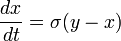
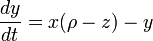
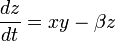

The Lorenz attractor itself, and the equations from which it is derived, were introduced by Edward Lorenz in 1963, who derived it from the simplified equations of convection rolls arising in the equations of the atmosphere.
In addition to its interest to the field of non-linear mathematics, the Lorenz model has important implications for climate and weather prediction. The model is an explicit statement that planetary and stellar atmospheres may exhibit a variety of quasi-periodic regimes that are, although fully deterministic, subject to abrupt and seemingly random change.
From a technical standpoint, the Lorenz oscillator is nonlinear, three-dimensional and deterministic. In 2001 it was proven by Warwick Tucker that for a certain set of parameters the system exhibits chaotic behavior and displays what is today called a strange attractor. The strange attractor in this case is a fractal of Hausdorff dimension between 2 and 3. Grassberger (1983) has estimated the Hausdorff dimension to be 2.06 ± 0.01 and the correlation dimension to be 2.05 ± 0.01.
The equations that govern the Lorenz oscillator are:



where σ is called the Prandtl number and ρ is called the Rayleigh number. All σ, ρ, β > 0, but usually σ = 10, β = 8/3 and ρ is varied. The system exhibits chaotic behavior for ρ = 28 but displays knotted periodic orbits for other values of ρ. For example, with ρ = 99.96 it becomes a T(3,2) torus knot.
When σ ≠ 0 and β (ρ-1) ≥ 0, the equations generate three critical points. The critical points at (0,0,0) correspond to no convection, and the critical points at (√(β(ρ-1)), √(β(ρ-1)), ρ-1) and (-√(β(ρ-1), -√(β(ρ-1)), ρ-1) correspond to steady convection. This pair is stable only if ρ= (σ(σ+β+3))/(σ-β-1), which can hold only for positive ρ if σ > β+1.
Text courtesy of Wikipedia under the CC Share-Alike License.